SnapCoat on a phone, with a fresh coat
Mobile concepts for the sales pipeline, the project pipeline and the calendars. These are stills. The live version moves: you can swipe the stages, carry a card to another stage, and drag the day on the calendar.
Open the live prototype- The board is the screen. Today the first stage starts two screens down, under banners and five stat tiles. Here it starts at the top, and the numbers fold away when you scroll.
- Stages are paint chips. Swipe sideways to walk the pipeline, or tap a chip. Each chip carries its count and its total.
- Hold a card and carry it onto a chip to move it. There is an undo.
- Each card has one next step: call, directions, finish the proposal, nudge, schedule.
- Projects show coats, so progress reads at a glance, with the crew and what is still owed.
- The calendar is a day you drag through, with drive time between stops and open time you can book. Project schedule is a crew board for the week.
- Three finishes. Gloss is the full liquid glass. Satin is frosted and calmer. Matte is solid, for bright sun and older phones.
Sales pipeline
New lead to job sold, one stage per swipe.
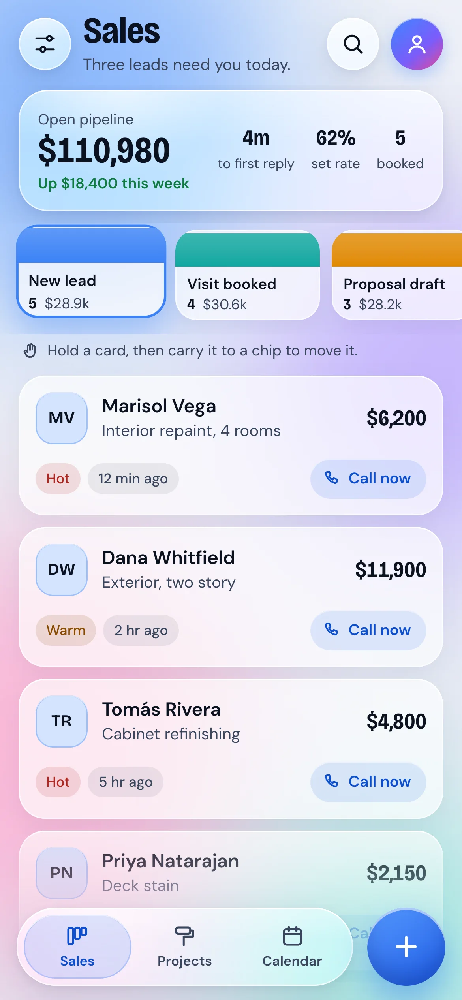
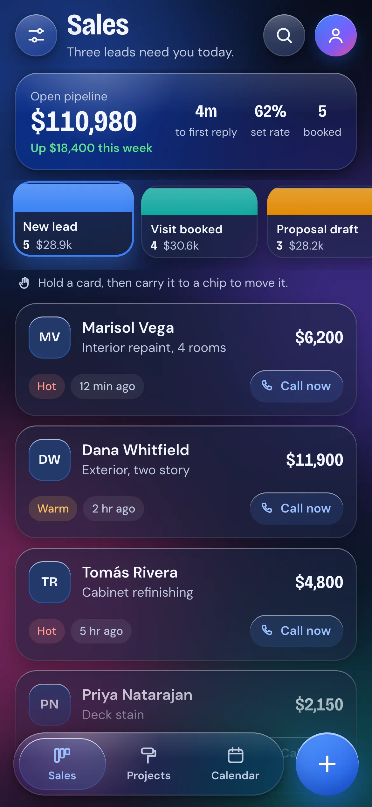
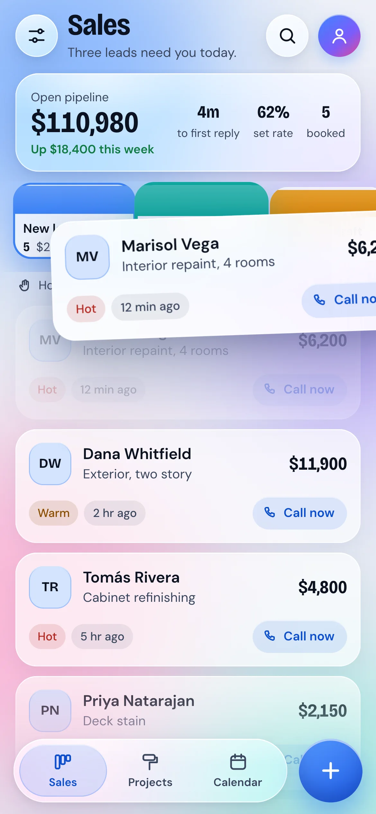
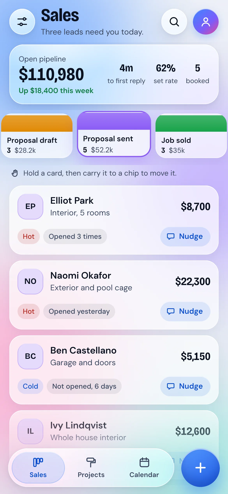
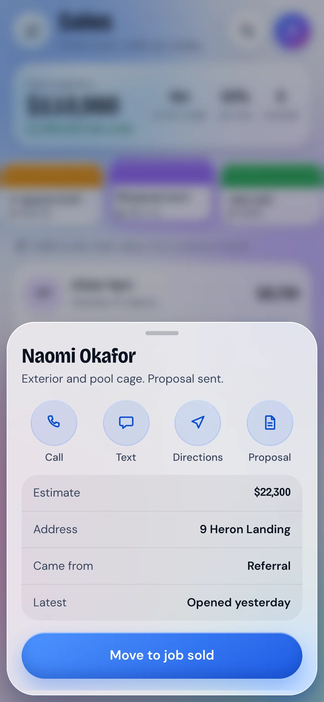
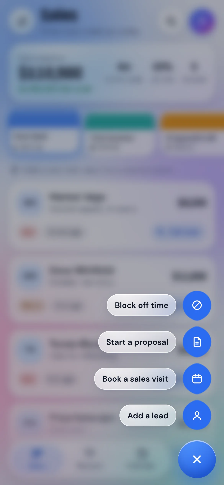
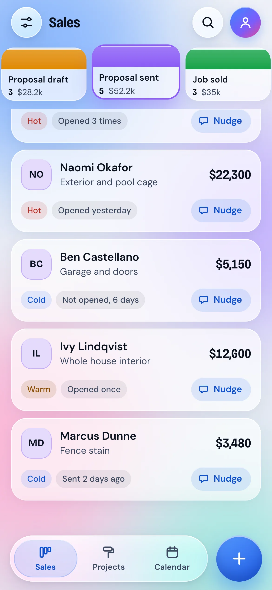
Project pipeline
From needs a date to closed and paid.
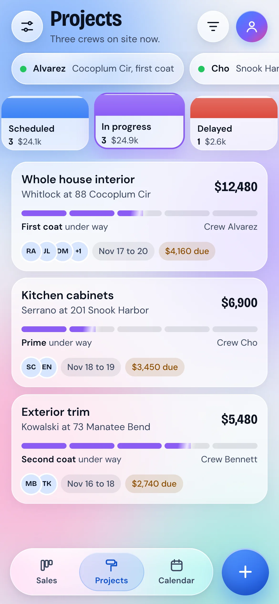
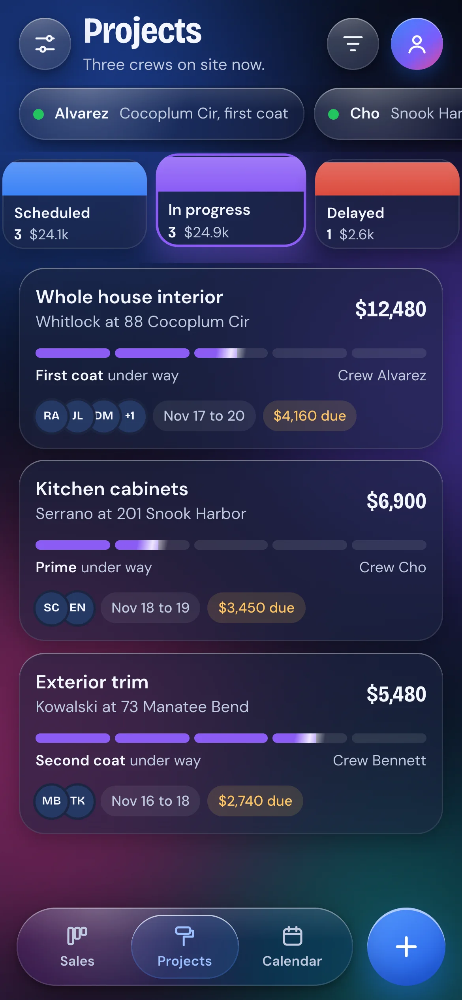
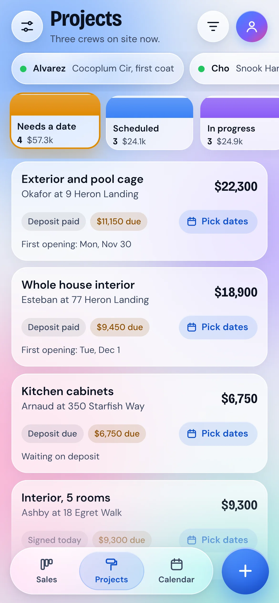
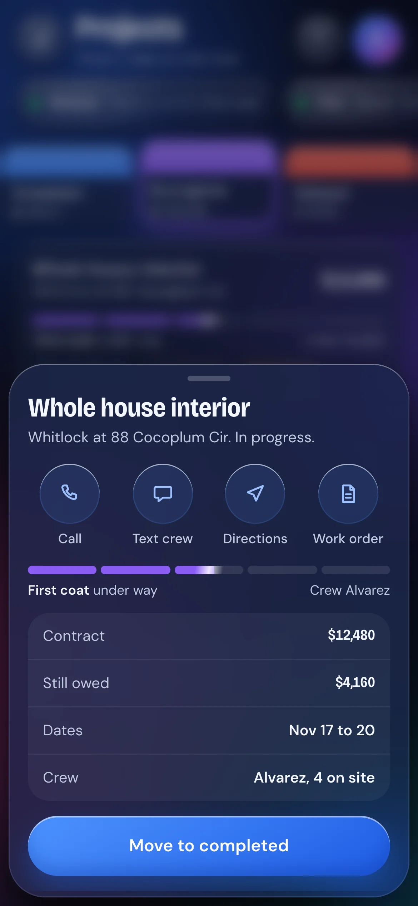
Calendars
Sales visits by the day. Project schedule by the crew.
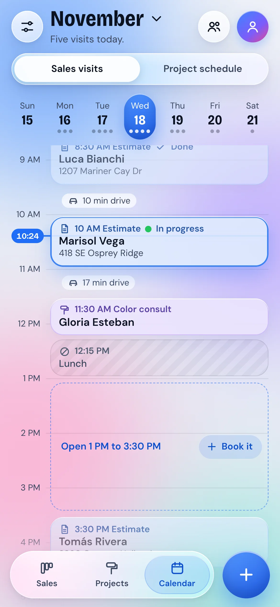
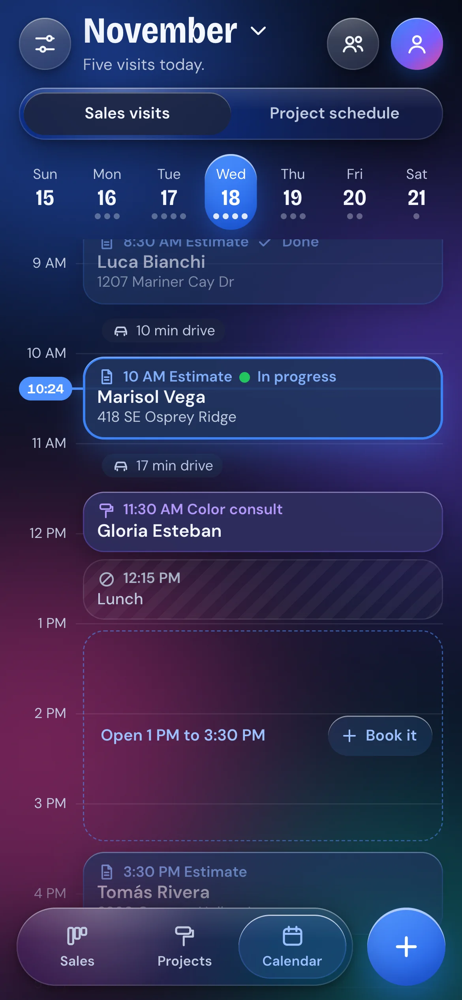
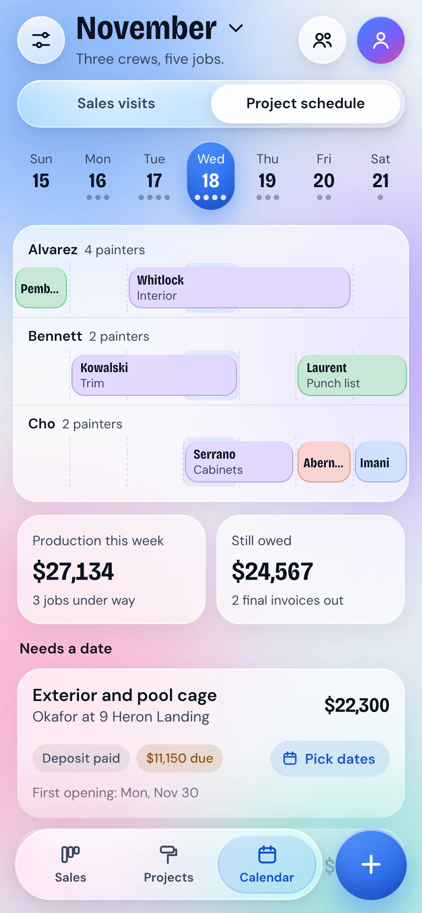
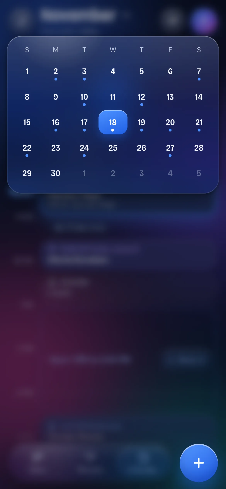
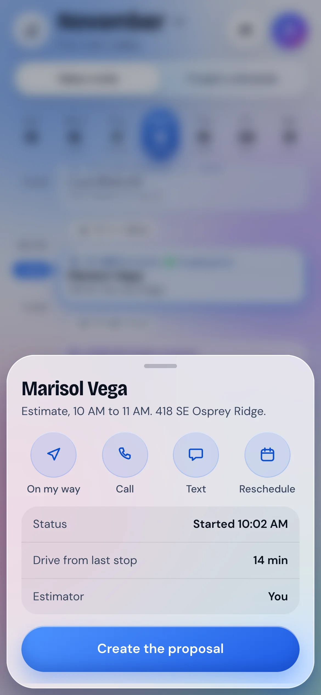
Pick your finish
Same layout, three amounts of glass.
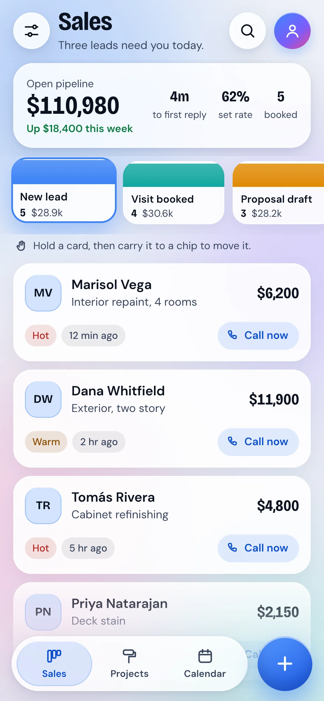
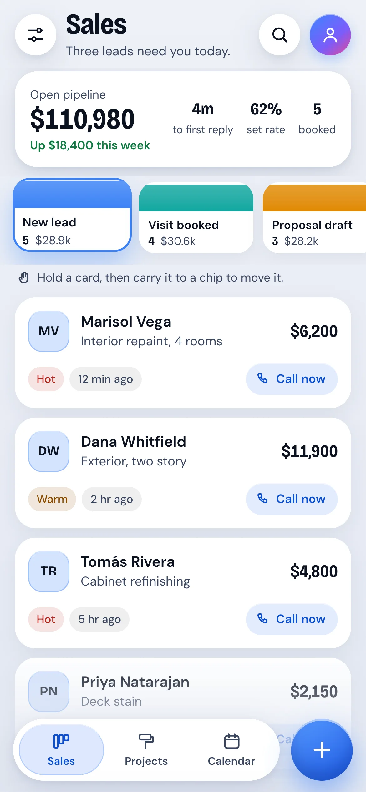
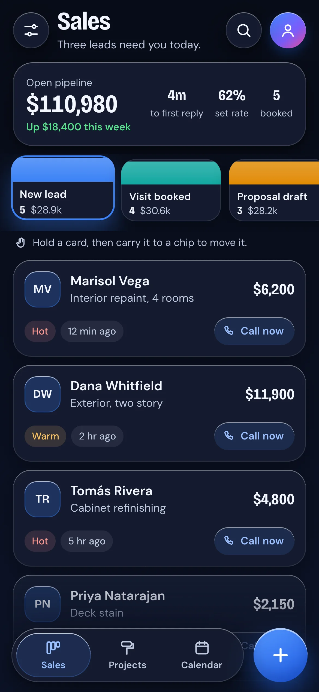